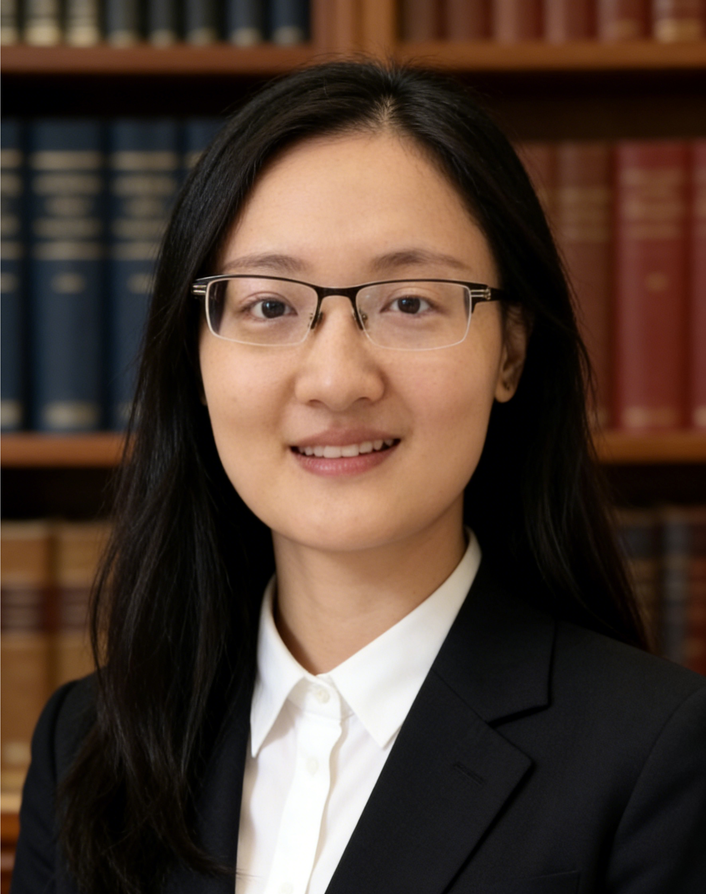

Principal Investigator
Peirong Lin
Institute of Remote Sensing and GIS
School of Earth and Space Sciences, Peking University
Peirong Lin leads GeoWater Lab at Peking University. Her research combines Earth system science and models with remote sensing, GIS, and geospatial analytics to study terrestrial water cycling, river systems, and flood–human interactions. She completed postdoctoral training in Civil and Environmental Engineering at Princeton University and received her Ph.D. in Water, Climate, and Environment from The University of Texas at Austin.